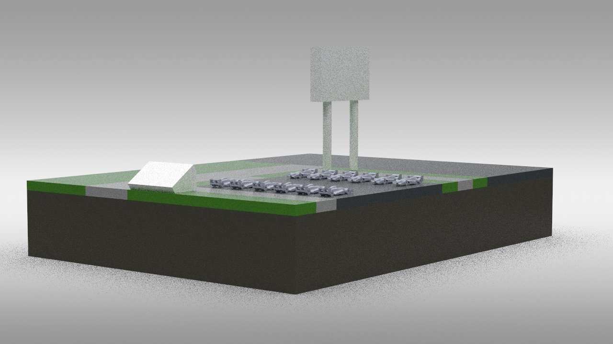

Major: Mechanical Engineering
Minor: Applied Mathematics
GPA: 3.75
I am a Mechanical Engineering student at the University of Colorado Boulder, minoring in Applied Mathematics with an emphasis on probability and statistics. My passion for mobility and performance engineering stems from years of hands-on automotive modification—specifically performing performance upgrades, like turbo-back exhaust installations, on platforms including the Subaru WRX and Audi S4. Today, I channel that drive into precision fabrication, data acquisition, and mechatronic systems.
Whether I am integrating Garmin Tread telemetry for the CU Boulder Racing Team, machining tight-tolerance wobbler engines, or engineering high-temperature composites for the Sounding Rocket Laboratory, I focus on bridging the gap between computational modeling and physical manufacturing. I am actively seeking aerospace, automotive, and mechatronics internship positions where I can leverage my skills in SOLIDWORKS, manual machining, and system architecture.

Role: Project Coordinator & Systems Architect
The Challenge: Navigating campus parking for 30,000+ students is highly inefficient. We needed a low-cost, accurate way to monitor space availability in high-traffic conditions.
My Process & Technical Contribution: I translated user survey requirements into the technical system architecture. I co-engineered an Arduino-based IoT parking map utilizing BH1750 light sensors to detect vehicle presence. My focus was on bridging the hardware-to-software gap, ensuring sensor data accurately updated the user interface.
The Result: Our prototype achieved 95% detection accuracy in simulated high-traffic conditions. We successfully validated the technical viability of the system by presenting the prototype and a technical report to industry judges at the IDE Design Expo.